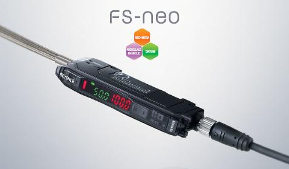
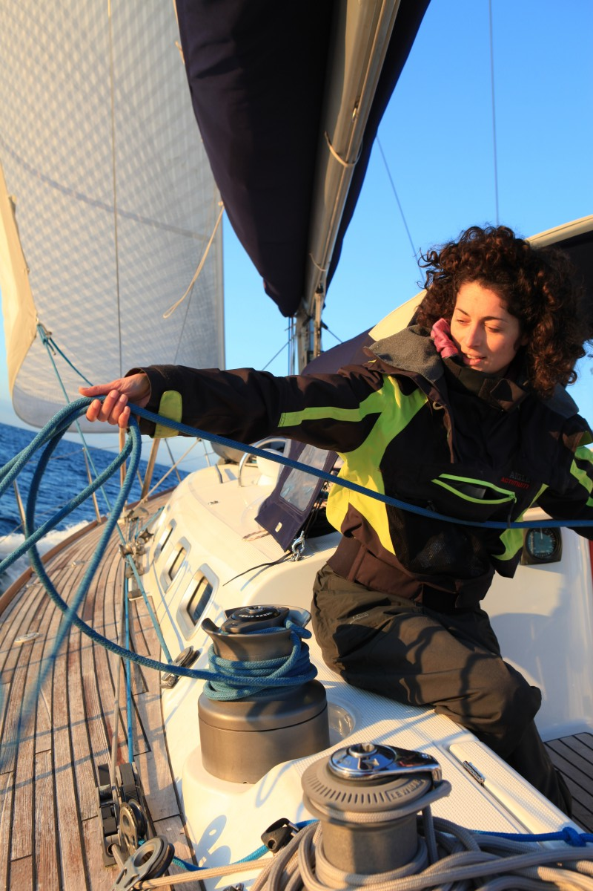

11/02/2013/
La fibre optique, une technologie de pointe pour la société Eical
La société Eical utilise depuis plusieurs années les capteurs en fibre optique dans les réalisations qu'elle propose à ses clients.
« Ces capteurs offrent des possibilités de mesures précises pour les bateaux de course :
ils permettent des architectures complexes et fiables sur tout un ensemble de paramètres. Leurs robustesses répondent aux besoins des régates au large ou la fiabilité du matériel, soumis à rude épreuve est un élément crucial. La longueur des fibres peut atteindre plusieurs kilomètres. Ces capteurs sont insensibles à l’immersion, aux interférences électromagnétiques et au vieillissement. »

12/02/2014
Eical et l'écurie course de la "Banque impopulaire" une histoire qui dure !
Le partenariat entamé en 2012 avec la "Banque Impopulaire" se poursuit en 2014 avec un passage à l'échelle. C'est désormais la totalité de l'équipement de navigation qui est maintenu et développé par Eical. Cette nouvelle confiance accordée renforce la crédibilité de notre société dans le monde de la course au large.
« Dès que nous sommes passés en totalité sur le matériel Eical, nous avons observé de nouvelles perspectives en terme de navigation : plus de confiance dans les données fournis par le système et donc moins de prise de risque pour le bateau et son équipe »
Sophie Delacreuse, skippeuse de "Banque impopulaire

22/02/2014
Eical sera présent au World Navigation Devices à Boston !
Eical sera présent au WND de mars 2014 pour présenter ses dernière innovations en matière d'outils de navigation.
Le WND est un salon mondial, ayant lieu chaque année dans la ville de Boston.
Il accueille 150 exposants de toute nationalité. Cet événement est l'occasion de nouer de nouveaux contacts et de rencontrer des clients potentiels

Created with Admarket's flickrSLiDR.